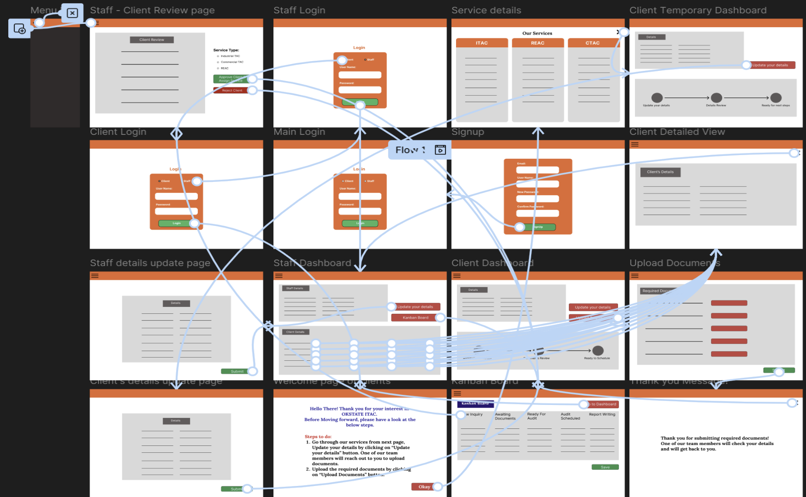
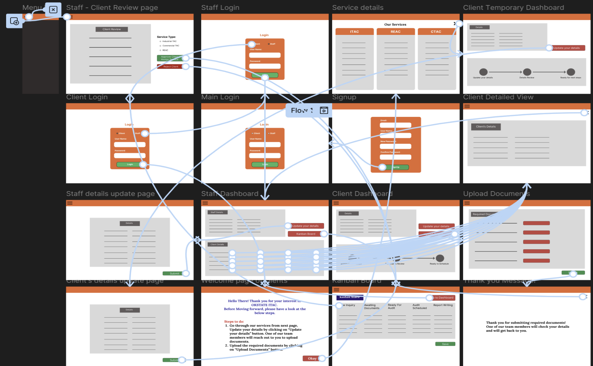
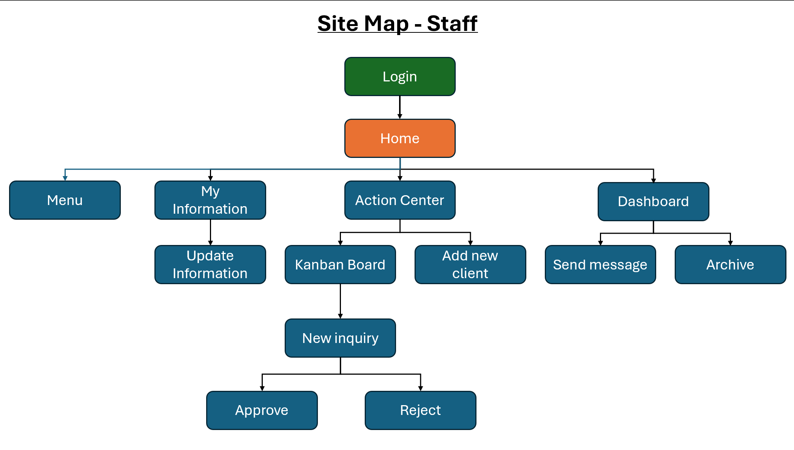
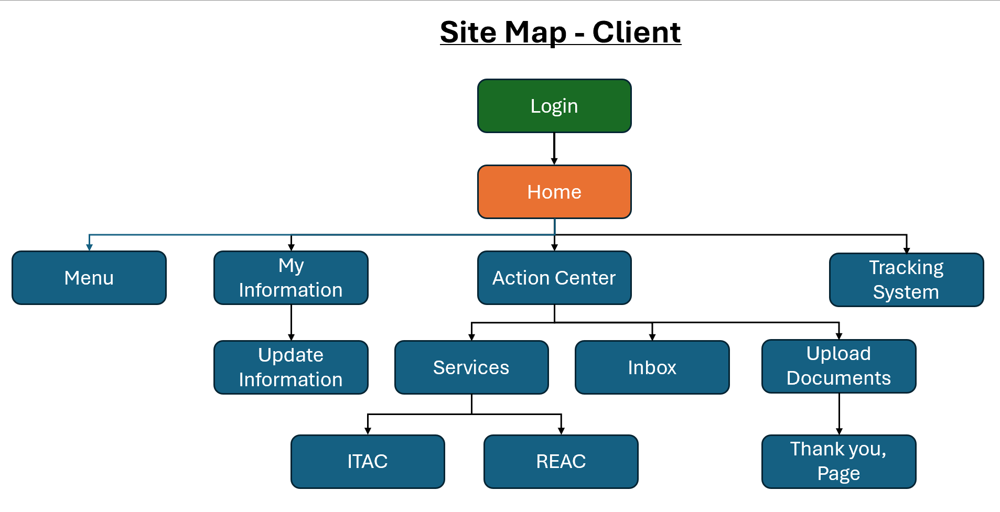

The ITAC Operations & Client Portal
Overview
The goal is to replace a fragmented, email-reliant workflow with a controlled, trackable, and traceable system through automation. This unified web portal for OSU's ITAC will manage the entire client assessment lifecycle, eliminate process bottlenecks, and provide a single source of truth for all project stakeholders (internal staff, management, students, and external clients).
.png)
The Problem: Understanding the User
The primary research was a detailed, semi-structured interview with a key ITAC staff member who manages the client pipeline. The interview revealed that the current process is almost entirely manual, leading to significant inefficiencies and a lack of visibility.
This uncovered four major pain points:
- No Centralized Visibility: There is no mechanism for management or staff to see the client backlog or project statuses. Staff must keep manual lists, creating confusion and communication gaps.
- "Clumsy and Clunky" Onboarding: The initial client interaction involves a multi-step email process with 3-4 attachments, which is inefficient and difficult to track.
- Lack of Client Status Tracking: ITAC has no systematic way of tracking which clients have submitted documents, what's missing, or when to follow up, causing potential projects to languish.
- Data Delays Cause Bottlenecks: On-site audits are started before all utility data is collected. This forces students writing the report to chase down data later, stretching a 5-day task into 15 days and jeopardizing deadlines.
Persona: "Jack" the Program Coordinator
Based on the research, I created a persona to represent the primary staff user, "Jack."
"I started doing this [keeping a list] and it was too much... I'm having to keep it in a separate file somewhere."
Problem Statement: Jack is a busy project coordinator who needs a centralized and automated system to manage the client pipeline because the current manual, email-based process makes it impossible to track client statuses effectively, leading to project delays and a significant administrative burden.

User Journey Map
Jack's journey for onboarding a new client is defined by manual tasks, context-switching, and a lack of automated support. I mapped this process to find clear opportunities for improvement.


Improvement Opportunities Identified:
- A single intake form to auto-create projects.
- An automated welcome email with a link to a personalized client dashboard.
- Auto-generated digital folder structures.
- A real-time dashboard showing document status for every client.
- System-generated reminder emails for clients with incomplete documents.
Starting the Design
Paper Wireframes
I started with paper and pencil to quickly explore layouts and information hierarchies. This allowed me to focus on the core structure, exploring both a comprehensive client and staff dashboard. My initial sketches helped establish a cohesive flow, starting with a login that leads to respective dashboards.


Digital Wireframes & Low-Fidelity Prototype
My digital wireframes translated these solutions into a clear, functional blueprint.
- Staff Dashboard & Kanban Board: This is the central command center. It directly addresses the "No centralized visibility" pain point by providing a single, "at-a-glance" visual pipeline of all client projects.
- Client Dashboard: This is the client's home base, designed for clarity. A prominent visual status tracker solves the "Lack of client status tracking" and provides transparency.
- "Uploaded Documents" Screen: This replaces the "clumsy onboarding" process. A simple checklist with upload buttons ensures all data is received in one organized place before an audit is scheduled.

View the Low-Fidelity Prototype
Usability Study: Round 1 Findings
I conducted a design review and usability study with the key ITAC staff member. This study was incredibly valuable and uncovered a major gap in the initial design, leading to a significant pivot.
- Critical Discovery: The design was missing a critical, upfront vetting process *before* a client is approved for document submission.
- Functional Gap: The original design did not account for different service types (ITAC - Industrial, ITAC - Commercial, REAC), which is the first decision the staff makes.
- Workflow Invalidated: The assumption of a single client flow was incorrect. The portal needed a new two-phase onboarding process to separate "vetting" from "assessment."
Updated Architecture & Prototype
Based on the findings, I re-architected the flow to include the new two-phase vetting process. This introduced a "Client Temporary Dashboard" for initial data collection and a "Staff - Client Review Page" to manage the new approval step.
 

View the Updated Low-Fidelity Prototype
Usability Study: Round 2 Findings
I conducted a design review and usability study with the key ITAC staff members and director. This study was incredibly valuable and uncovered some issues and painpoints.
- Insufficient Logos: The design was missing some logos, the director wants to represent the brand by logos.
- Color Mismatching: The original design doesn't have the color accuracy to the branding of the company, so I have created design systems.
- Text Errors: The design have some unwanted texts and font of the text is different from page to page which made user uncertain, so I have selected a standard font.
Site Map
After the usability studies, I designed site maps for both staff and client separately.
 Refining the Design
By considering all the findings from usability studies, I made high-fidelity prototypes.
Solutions for Findings
- Created a standard design system with standard UI Elements, Guidelines.
- Added a lot of logos and redesigned accordingly.
- Added new features and made it simple for better understanding.
Accessibility Considerations
- Designed with clear color contrast for text and UI elements to meet WCAG AA standards.
- Ensured all interactive elements have clear focus states for keyboard navigation.
- Used clear, hierarchical headings and ARIA labels for screen reader accessibility.
Hi-Fi Prototype
Phase 2: Iteration & Development
1. Feedback Loop: The Geographic Pivot
The Insight: During the final mockup reviews, staff mentioned a hidden logistical need: "We try to plan two audits on the same day if clients are nearby to save travel costs."
The Design Change: I realized the "My Information" section on the Staff Dashboard was low-value screen real estate. I replaced it with a dynamic Client Map. Now, staff can instantly see clusters of clients and plan travel routes efficiently.
2. From Design to Code (React)
I didn't just design it; I built it. Using React for the front end, I developed a responsive, interactive portal. Below is the comparison between my Figma Design (showing the new Map feature) and the deployed React Application.


Slide to compare the Figma Mockup (Left) vs. the Live React App (Right)
3. Refined UI & Features
I also refined the UI to be cleaner and fully responsive. On the Kanban board, I added "Scheduled Dates" to the cards so staff can check status without clicking.
Client Review Interface (Design)

Client Profile (Live Build)

Takeaways
Impact: The new design, once implemented, is projected to automate the entire client onboarding process, saving staff an estimated 5-8 hours per week in manual data entry and follow-up emails.
What I learned: This ongoing project is a massive lesson in balancing the needs of multiple, diverse user groups. The "Client" needs extreme simplicity, while the "Staff" needs powerful, complex tools. The biggest challenge is designing a single system that serves both without compromise. Building the front-end directly from my own designs has also been incredibly efficient, allowing me to spot and fix usability issues during development that I might have missed in a static prototype.